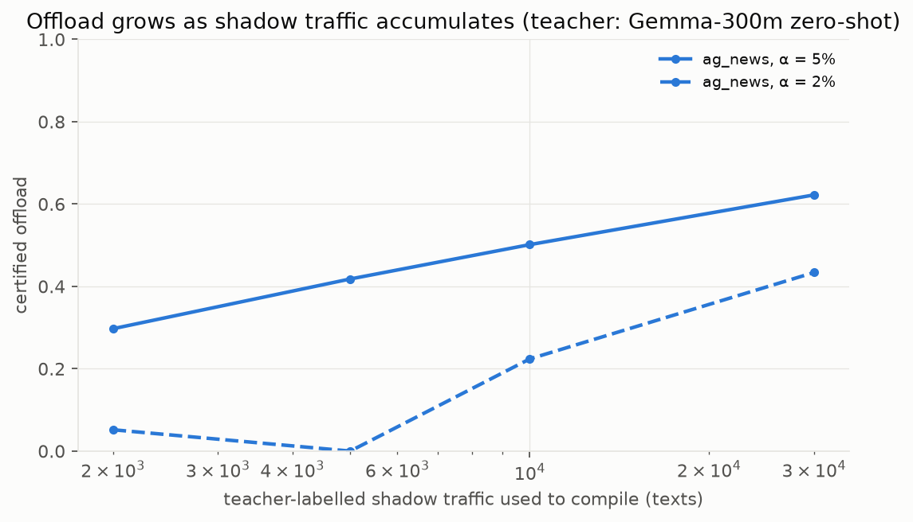

Benchmarks#
Every number here was measured during development on an Apple M5 Pro laptop (single CPU thread unless stated). Each table names its raw result file, which you can open from this page. Charts are rendered from those files. Teachers used: EmbeddingGemma-300m zero-shot (option-name similarity) and Kev-0.8B (an open decision model, run locally on the GPU). Datasets are public and downloaded by the scripts, never redistributed.
1. Shadow mode: certified offload (phase31_fidelity.json)#
Protocol:
- The teacher labels the train split, which serves as the shadow log.
- 3,000 records (or a third of the log, if smaller) are held out for the certificate; the table is fitted on the rest.
- Results are measured on the official test split against both the teacher and gold labels.
- Three seeds.
- Kev is evaluated on the 600 test items it labelled.
| Teacher → task | Options | Teacher accuracy | Table–teacher agreement | Offload at α = 2% (realised disagreement) | Offload at α = 5% (realised; worst seed) | Cascade accuracy at α = 5% | Teacher latency |
|---|---|---|---|---|---|---|---|
| Kev-0.8B → BANKING77 | 77 | 83.7% | 83.5% | 53% (2.8%) | 71% (5.7%; 6.5%) | 84.4% | 75 ms (GPU) |
| Gemma → BANKING77 | 77 | 78.0% | 85.3% | 50% (1.4%) | 71% (4.1%; 4.7%) | 78.2% | 20 ms |
| Gemma → HWU64 | 64 | 85.5% | 82.0% | 14% (0.4%) | 69% (5.4%; 5.8%) | 84.7% | 75 ms |
| Gemma → CLINC150 | 150 | 75.6% | 82.5% | 10% (0.5%) | 65% (4.9%; 5.1%) | 75.8% | 20 ms |
| Gemma → MASSIVE | 60 | 86.1% | 80.2% | 0% | 64% (4.9%; 5.7%) | 85.4% | 27 ms |
| Gemma → DBpedia | 14 | 71.0% | 79.9% | 38% (2.1%) | 54% (4.0%; 4.3%) | 71.4% | 69 ms |
| Gemma → AG News | 4 | 61.7% | 80.6% | 7% (0.5%) | 45% (3.9%; 4.1%) | 62.1% | 54 ms |
| Gemma → LEDGAR | 100 | 29.2% | 68.2% | 0% | 13% (4.3%) | 29.2% | 55 ms |
| Gemma → SST-2 / toxic / emotion | 2–6 | 59–86% | 64–81% | 0% | 0% | = teacher | 22–45 ms |
| Gemma → CR / tweet sentiment | 2–3 | 66–90% | 60–75% | 0% | 2–5% | = teacher | 23–24 ms |
Re-validation (phase31_revalidate_kev_seeds345.json, fresh seeds 3/4/5), Kev → BANKING77:
| α | Offload | Realised disagreement | Cascade accuracy |
|---|---|---|---|
| 5% | 70.8% | 5.1% | 84.4% |
| 2% | 49.1% | 2.0% | — |
Mean latency in the cascade at α = 5%:
| Teacher → task | Teacher alone | Cascade |
|---|---|---|
| Kev-0.8B → BANKING77 | 75 ms | 22 ms |
| Gemma → BANKING77 | 20 ms | 5.7 ms |

2. Offload grows with shadow traffic (phase35_shadow_curve.json; re-run on a random test sample: phase35_shadow_curve_v2.json)#
AG News, Gemma teacher, fixed 5,000-record calibration slice:
| Shadow records | Agreement | Offload α = 1% | Offload α = 2% | Offload α = 5% (realised) |
|---|---|---|---|---|
| 2,000 | 76.7% | 0% | 5% | 31% (4.8%) |
| 5,000 | 80.0% | 0% | 0% | 42% (4.1%) |
| 10,000 | 81.9% | 5% | 23% | 50% (4.2%) |
| 30,000 | 84.0% | 29% | 43% | 62% (3.8%) |
| 100,000 | 86.1% | 38% | 52% | 70% (4.1%) |
On a random 5,000-item test sample (_v2, up to 30k records) the realised disagreement stayed at or under α at every point.
A shift example. In the first DBpedia run, the test slice was the first 5,000 rows of a file sorted by class, so it was dominated by one class. Realised disagreement there was 6–7% against a 5% target. A marginal certificate does not survive a large class-mix shift; this is why re-certification and audits exist.
3. Runtime (phase21_ops.json)#
One process; Python API with the C core; BANKING77 bundle (77 options).
| Measure | Value |
|---|---|
| Cold start to first answer | 0.27 s |
| Resident memory after 20k requests | 41 MB |
| In-process decision | 15.0 µs p50 / 28.0 µs p99 |
| HTTP, 1 client | 0.19 ms p50 / 0.22 ms p99 · 5,183 req/s |
| HTTP, 8 clients | 0.66 ms p50 / 1.40 ms p99 · 11,356 req/s |
| HTTP, 32 clients | 2.46 ms p50 / 6.84 ms p99 · 11,508 req/s |
| HTTP, 128 clients | 4.02 ms p50 / 139 ms p99 · 10,948 req/s |
| C core, per decision | ~1 µs |
| JavaScript (Node), per decision | 6.9–11.1 µs p50; 100% identical decisions to Python on 3,076 inputs |
4. Size versus accuracy (phase34_prune.json)#
Tables compiled from unlabelled logs, then pruned by row importance.
| Budget | BANKING77 (77 options) | CLINC150 (150 options) |
|---|---|---|
| full | 88.8% · 2.0 MB (405 KB gzipped) | 88.7% · 4.4 MB (609 KB gzipped) |
| 1 MB | 88.7% | 88.6% |
| 512 KB | 88.5% | 88.4% |
| 256 KB | 88.5% | 85.1% |
| 128 KB | 87.4% | 42.7% |
For 150 options below 512 KB, the 150 × 150 radius matrix (90 KB) dominates; omit it in such builds.
5. Public decision-model benchmark (phase22_jevbench.json)#
local-jev-bench committed file questions_banking77.jsonl: 300 items, 20 options each. The shad0w table here was compiled from BANKING77's unlabelled train logs; the other engines use no in-domain data.
| Engine | Accuracy | Per item | Hardware |
|---|---|---|---|
| Cloudflare Clef-flash (9B) | 97% | 1,274 ms | M3 Max GPU (published) |
| Cloudflare Clef (27B) | 96% | 4,525 ms | M3 Max GPU (published) |
| shad0w table | 89.7% | 0.018 ms | 1 CPU thread |
| Kev-9B / Kev-4B | 89% / 89% | 546 / 290 ms | M3 Max GPU (published) |
| Kev-0.8B | 88% | 57.6 ms | M3 Max GPU (published) |
| Winnow-E4B | 81% | — | published |
| Von (395M) | 80% | 38 ms | published |
| Ollaya / Laya | 60% | 28 ms | published |
Published rows are from the benchmark's README and its pull request #6 (5 October 2026). shad0w is not the most accurate engine here. It is the only one on a CPU and the only one below a millisecond.
6. Head-to-head on identical inputs (compare_head_to_head.json)#
600 test messages per dataset, 20 options each. Order flip is the share of decisions that change when the options are reversed.
| Engine | BANKING77 | CLINC150 | Order flip | p50 |
|---|---|---|---|---|
| Kev-0.8B (GPU) | 90.5% | 83.3% | 5.5–9.5% | 25–27 ms |
| Laya 421M (GPU) | 75.7% | 96.2% | 6.5–17% | 27–28 ms |
| shad0w table, from unlabelled logs | 94.3% | 96.7% | 0% | 0.028 ms |
| shad0w table, supervised | 96.0% | — | 0% | 0.027 ms |
7. Label-free mode: no teacher, no labels (phase20_sweep.json, phase25_ablation.json, phase26_overlap.json)#
Option names plus unlabelled train logs; EmbeddingGemma-300m at compile time; full option sets; official test splits.
| Task | Options | Encoder zero-shot | Table, no labels | Table, all labels |
|---|---|---|---|---|
| BANKING77 | 77 | 78.0% | 88.5–88.8% | 90.5% |
| CLINC150 | 150 | 75.6% | 88.6% | 91.4% |
| DBpedia | 14 | 71.0% | 92.2% | 96.5% |
| AG News | 4 | 61.7% | 85.9% | 88.1% |
| SNIPS | 7 | 90.1% | 98.0% | 98.8% |
| jailbreak | 2 | 67.6% | 93.1% | 98.5% |
| HWU64 | 64 | 85.5% | 81.4% | 86.2% |
Checks:
- Overlap: 0–0.2% between the unlabelled pool and the test set on the headline tasks.
- Seed stability: standard deviation ≤ 0.16 points across seeds.
- Scope: across 30 public tasks the label-free table beat the encoder's own zero-shot on 15, the many-option ones, and lost on most binary and sentiment tasks.
8. Out-of-scope input (phase23_oos_clinc150.json)#
CLINC150 includes 1,000 out-of-scope test queries. These are scored against the label-free table, which knows only the 150 in-scope intents.
| Confidence threshold | In-scope answered | Error among answered | Out-of-scope silently answered |
|---|---|---|---|
| 0.5 | 92.9% | 7.6% | 22.0% |
| 0.8 | 81.7% | 4.2% | 8.5% |
| 0.95 | 67.5% | 2.7% | 3.3% |
AUROC for separating in-scope from out-of-scope by confidence: 0.94.
9. The representation ceiling (phase29_hybrid.json)#
Even with gold labels, the student size limits sentiment:
| Student | SST-2 | CR |
|---|---|---|
| hashed table | 78.6% | 79.8% |
| MiniLM-L6 (22M) | 79.8% | 82.2% |
| Gemma-300m probe | 90.5% | 94.1% |
This is why the table defers sentiment and tone instead of answering it.
10. Reproduce#
pip install -e ".[demo]"
python examples/quickstart.py # 20 s, synthetic
python examples/shadow_demo.py --teacher bge-small --dataset banking77
python examples/shadow_demo.py --teacher gemma-300m --dataset clinc150 # Gemma terms apply; accept them on the Hub
pytest -q
The demo uses an open sentence encoder as a stand-in teacher, so its numbers differ from the table in §1, which used EmbeddingGemma and Kev. The shape of the result is what to check: offload at α = 5%, realised disagreement at or near α, and cascade accuracy at the teacher's.
Reference run of python examples/shadow_demo.py --teacher bge-small --dataset banking77: an MIT-licensed teacher on public data, reproducible by anyone. The output is saved in shadow_demo_bge_small_banking77.txt. The teacher alone scores 68.0% zero-shot on the test set.
| α | Answered locally | Realised disagreement | Cascade accuracy | Compile + certify |
|---|---|---|---|---|
| 2% | 49.7% | 1.4% | 68.2% | a few minutes on a laptop CPU |
| 5% | 69.4% | 4.6% | 67.8% | a few minutes on a laptop CPU |
This run uses the 0.1.1 default certificate (auto: fixed-sequence and Bonferroni, each at δ/2). The earlier development run gave 50.7% / 69.5%. The results in §1 used the development procedure. On these tasks disagreement rises as confidence falls, so the numbers barely move. The 0.1.1 change matters for teachers with flat, input-independent noise; see the certificate page.
Something unclear? Open an issue or suggest an edit.